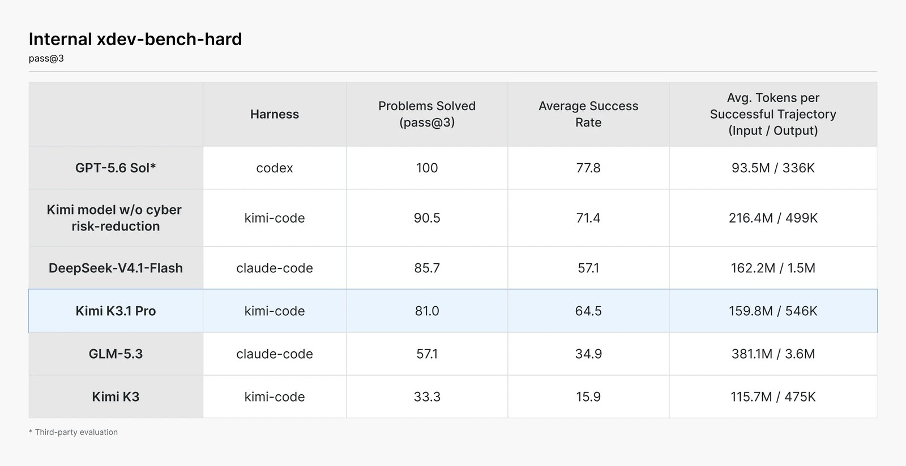

11 月 5 日，月之暗面把 Kimi K3.1 Pro 的权重放上 Hugging Face，兑现了 10 月 24 日发布时那句「权重将在 11 月 4 日前开放」。这份权重有 2.8 万亿总参数，混合专家架构下单次推理只激活约 1040 亿，支持 100 万 Token 上下文。同一天，Agent Arena 用它 1.75 万次真实智能体会话算出的榜单也更新了：K3.1 Pro 在开放权重模型里排第一，全部参评模型里排第 13，净改进率 +5.1%，上一代 K3 是 +0.9%。但另一组数字同样刺眼——BF16 权重约 5.6TB，INT4 量化后仍要 1.4TB。这是一次真正的开源，也是一次大多数人用不上的开源。
一、背景：K3 的底座，加了一轮更贵的后训练
K3.1 Pro 不是新架构，而是 K3 的后训练版本。月之暗面在技术博客里说得很直白：以 K3 为基座，投入了明显更大的后训练算力，做覆盖数百个下游领域的大规模联合强化学习。为了让这些 RL 算力「每一份都换回稳定、可预测的收益」，他们把整条栈都改了——RL 框架、长上下文推理、训练效率、沙箱基础设施、rollout 调度，以及一套共享的环境质量检查平台。
结构上还有一处关键改动：部分全注意力层被替换成门控稀疏注意力层，用来压低长上下文建模的开销。这解释了 100 万 Token 上下文为什么能和 2.8 万亿参数同时出现——否则光是注意力本身就会把推理成本吃穿。
二、核心：一张表里的三个位置
先看硬指标。Terminal-Bench 4.0 用严格的任务级测试考真实终端环境里的编码智能体，K3.1 Pro 得 65.7%，高于 GPT-6 Astra 的 58.2%，距 Claude Opus 5.5 的 66.4% 只差 0.7 个百分点。在自家考长程多步执行的 Kimi Code Bench 3.0 Long-horizon 上，它拿 61.2%，比 K3 的 55.95% 高出一截。
3D 方向是这一代新长出来的能力。BenchCAD 考的是从多视角渲染图反推 CAD 代码，K3.1 Pro 带工具拿 92.7%，接近 Opus 5.5 的 96.2% 和 GPT-6 Astra 的 95.9%。官方演示里，它能在 Unity、Unreal、Godot 里配合联网搜索和 3D 生成，从一句需求直接产出可玩场景。金融方向则给了两个自测数字：Financial Modeling 比 K3 高 7.2 分，Financial Research 高 11.6 分，Business Operation 大约是 K3 的 4.2 倍。

还有一组数字不太常被引用，但信息量最大：在内部的 Kimi Hallu Bench Hard 压力测试里，K3.1 Pro 的论断级幻觉率从 K3 的 23.4% 降到 8.3%，含至少一处事实错误的回答只有前代的 42.4%。对金融和投研场景来说，这一项的权重可能比 benchmark 排名更高。
三、Agent Arena：一个不要求用户投票的排行榜
这次排名的方法论比名次更值得看。Agent Arena 不做成对盲测，它从真实用户的智能体会话里提取信号——用户有没有明确确认任务完成、有没有表扬或投诉、有没有下纠正指令、Shell 命令有没有报错——再用一套叫「因果追踪」的随机化推断，估算每个模型相对平均水平的净改进率。
分项拆开看，K3.1 Pro 的改善集中在执行层而不是表达层：Bash Reliability 从 K3 的 -4.5%（第 13 名）升到 +7.9%，开放模型第一；Praise vs Complaint 从 +1.3% 升到 +7.7%；Steerability 达到 +6.5%，同样是开放模型首位；用户明确确认成功的 Confirmed Success 为 +3.9%，开放模型第四。
“Across coding, agentic, and knowledge benchmarks, K3.1 Pro matches or approaches the strongest proprietary models.”
四、各方反应：掌声和冷水一起来
开源阵营的反应基本是正面的：2.8 万亿参数、开放权重、Agent 榜单第一，这三个标签凑在一起，是今年开源模型最有分量的一次发布。有人把它和 Mistral Large 4 的开放权重、DeepSeek V4.1 Flash 的低价路线放在一起，说「开放权重」已经成了中国和欧洲实验室共同的默认分发方式。
冷水则来自部署侧。IT之家在报道里点得很直接：可下载和可本地运行之间隔着一条鸿沟。5.6TB 的 BF16 权重、1.4TB 的 INT4 权重，单机消费级显卡基本不具备部署可能，连 8 卡 H100 的机器都要掂量存储和带宽。换句话说，这份「开源」服务的是云厂商、推理服务商和有集群的研究机构，不是那个想在自己 4090 上跑模型的普通开发者。
还有一个细节值得单独拎出来：为了让开放权重版本更安全，月之暗面在中期训练和 RL 两个阶段都识别并移除了网络攻击相关数据。代价是可量化的——xdev-bench-hard 上，未做削减的同管线检查点解出 90.5% 的题目，最终版 K3.1 Pro 是 81.0%。把「安全对齐的代价」用同一张表量出来，这在业内并不常见。
五、深度解读：权重是分发渠道，不是产品
把这两个数字放在一起看——2.8 万亿参数和 5.6TB 权重——会发现一个反直觉的结论：开放权重在这个量级上，主要不是「给社区用」，而是「给生态定标准」。真正的用户仍然是 API 调用者：Kimi.com、Kimi Work、Kimi Code、Kimi API 才是产品，权重是让云厂商敢接、让评测机构敢测、让企业敢做私有化部署的凭证。这也解释了为什么同时发了一个 Highspeed 版本，速度是 K3.1 Pro 的 2-3 倍。
对行业的三点含义。第一，开源模型的能力天花板已经贴近闭源前沿，差距从「代际」缩到「零点几个百分点」，但部署成本的天花板没动。第二，Agent 类评测正在从「回答质量」转向「执行可靠性」，Bash 报错率、任务确认率这些信号比 MMLU 更能预测真实体验。第三，安全数据的取舍开始被公开量化，未来监管和采购很可能会要求厂商披露这类「削减前后的对照数字」。
六、总结
一句话：Kimi K3.1 Pro 把「最强开放权重模型」和「最难本地部署的开放权重模型」同时做到了，65.7% 的 Terminal-Bench 和 5.6TB 的权重文件说的其实是同一件事——开放权重已经是大厂的模型分发渠道，而不是开发者的硬盘福利。